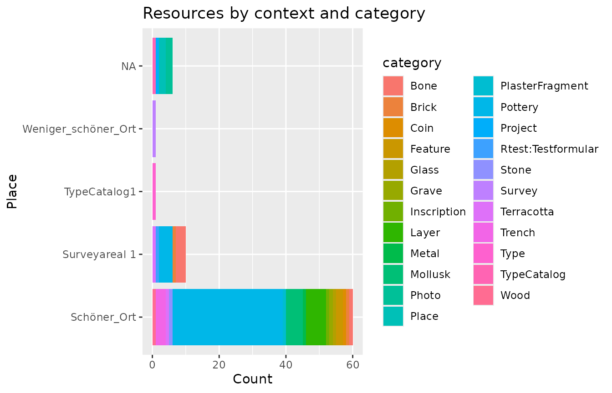
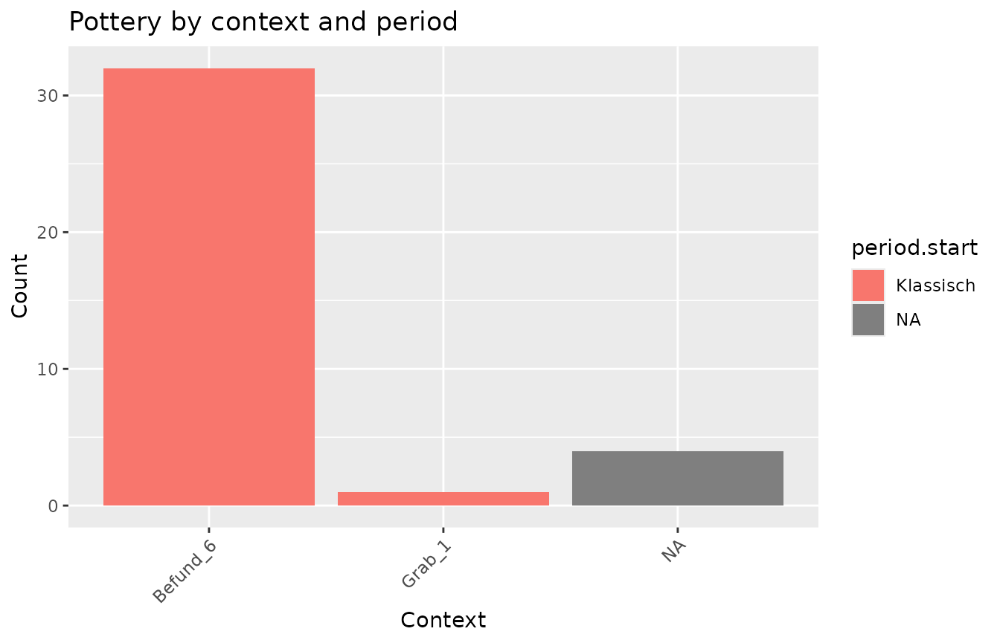
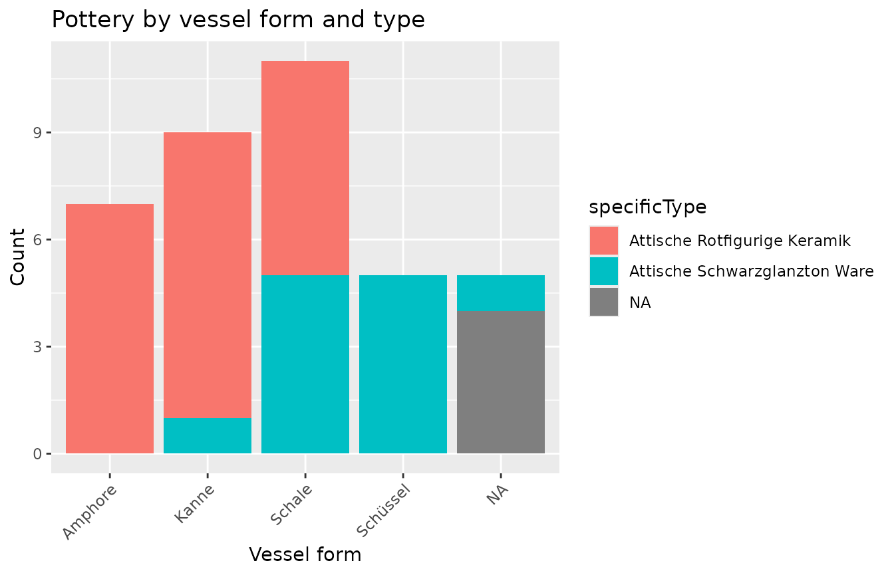

idaifieldR imports data from iDAI.field / Field
Desktop directly into R via the CouchDB API. This eliminates the
need for CSV exports and allows scripts to be re-run and updated
whenever the database changes.
Installation
idaifieldR is not yet on CRAN. Install it from GitHub
using remotes:
remotes::install_github("lsteinmann/idaifieldR")
library(idaifieldR)Connecting and Loading Data
To follow along with this tutorial, load the test dataset bundled
with the package into a new Field Desktop project called
rtest. The import file is located at inst/testdata/rtest.jsonl
on GitHub.
Create a connection object with connect_idaifield():
conn <- connect_idaifield(pwd = "hallo", project = "rtest")You can also ping the database to see if the connection succeeds:
idf_ping(conn)If Field Desktop is running on the same computer, the
serverip argument can be left at its default
("localhost"). The pwd argument is the
password set in Field Desktop under Tools > Settings > Your
password.
Load the complete project database into R:
idaifield_test_docs <- get_idaifield_docs(connection = conn)The result is a named list of class idaifield_docs — one
element per resource, named by identifier, reflecting the original JSON
structure. Loading the whole database at once can be slow and
memory-intensive for large projects; see the Queries section for a more targeted approach.
Building an Index
The index maps UUIDs to human-readable identifiers and is used by
simplify_idaifield() to make relations readable. Generate
it with get_field_index():
index <- get_field_index(conn, verbose = TRUE, gather_trenches = TRUE)With verbose = TRUE the index also includes the
shortDescription. With gather_trenches = TRUE
the Place column is added, which contains the nearest
Place-category resource (if any). Use head(index)
to inspect it, or plot a quick overview of the dataset:
index |>
ggplot(aes(y = Place, fill = category)) +
geom_bar() +
labs(title = "Resources by context and category", y = "Place", x = "Count")
Unnesting (Optional)
get_idaifield_docs() returns the raw nested structure as
it comes from the API, containing the complete revision history for each
resource. You can reduce it to the resource level with
maybe_unnest_docs():
idaifield_test_resources <- maybe_unnest_docs(idaifield_test_docs)This step is optional — all idaifieldR functions handle
both idaifield_docs and idaifield_resources
lists. The unnested version takes up less memory and is easier to browse
in RStudio.
Simplifying the Data
simplify_idaifield() transforms the nested list
structure into something more R-friendly:
- Relations are flattened into named vectors with a
relation.-prefix (e.g.relation.liesWithin) - UUIDs in relations are replaced with human-readable identifiers
- Geometry is kept as a GeoJSON string if
keep_geometry = TRUE - Single level lists are flattened to vectore, but more complex fields are preserved as-is.
You need to supply the index of the
complete project database here, even if you are working
with a subset — it is used as a lookup table for UUID replacement. You
also need to supply the project config:
config <- get_configuration(conn)
idaifield_test_simple <- simplify_idaifield(
idaifield_test_resources,
index = index,
config = config,
keep_geometry = TRUE
)The result has class idaifield_simple. The connection
and project name are stored as attributes and carried through for later
use. Check them with attributes(idaifield_test_simple).
Selecting Resources
Use idf_select_by() to filter the simplified list by any
field:
pottery <- idf_select_by(idaifield_test_simple, by = "category", value = "Pottery")Queries
Alternatively, query the database directly instead of loading everything first. This is useful for large projects where you only need a small subset:
pottery_docs <- idf_query(conn, field = "category", value = "Pottery")
# Always supply the index of the complete database when simplifying a subset
pottery_simple <- simplify_idaifield(pottery_docs, index = index, config = config, keep_geometry = TRUE)See also ?idf_index_query and
?idf_json_query for more targeted queries.
Converting to a Data Frame
Convert the simplified list to a matrix and then a data frame with
idaifield_as_matrix():
pottery_df <- idaifield_as_matrix(pottery) |>
as.data.frame()From here, standard R and ggplot2 workflows apply:
pottery_df |>
ggplot(aes(x = relation.liesWithin, fill = period.start)) +
geom_bar() +
labs(title = "Pottery by context and period",
x = "Context", y = "Count") +
theme(axis.text.x = element_text(angle = 45, hjust = 1))
pottery_df |>
ggplot(aes(x = vesselForm, fill = specificType)) +
geom_bar() +
labs(title = "Pottery by vessel form and type",
x = "Vessel form", y = "Count") +
theme(axis.text.x = element_text(angle = 45, hjust = 1))
Geometry
Geometry is kept as a GeoJSON string when
keep_geometry = TRUE in simplify_idaifield().
To convert to an sf object for spatial analysis:
Please note that you will need to set the CRS manually.
Working with the Raw List
If the matrix format does not suit your analysis, work directly with
the idaifield_resources or idaifield_simple
list. Each element is a named list corresponding to one resource —
extract fields directly, apply your own lapply()
transformations, or use purrr to reshape the data as
needed.